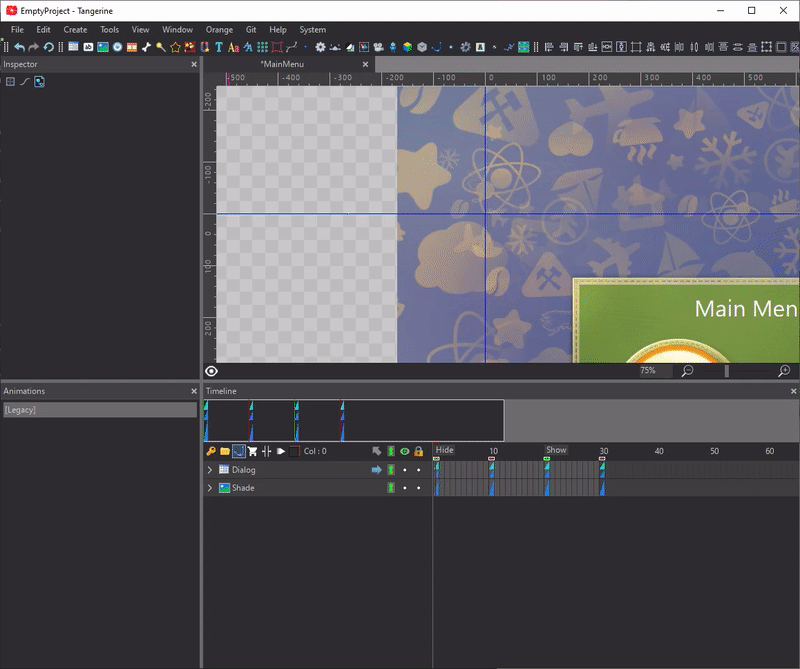
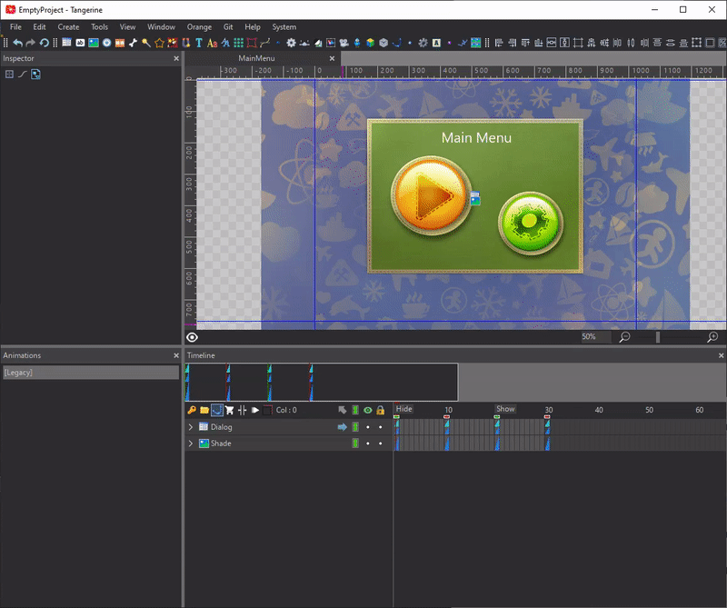
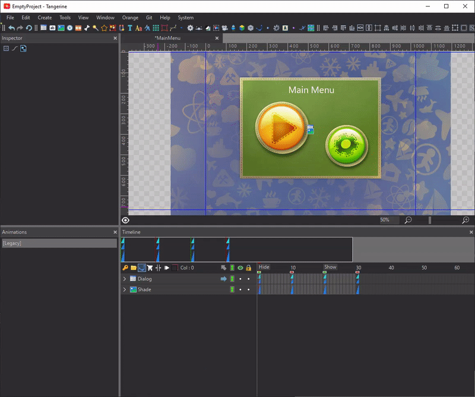
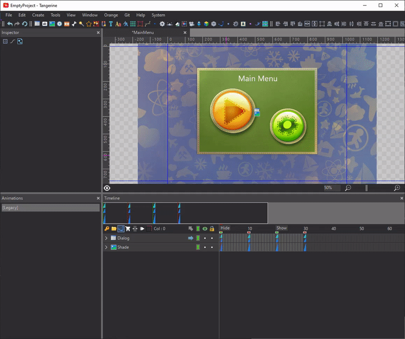
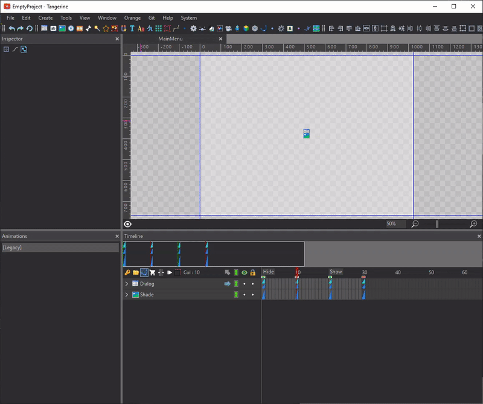

Maximizing your efficiency in Tangerine — lookup
Lookup is a Tangerine feature that makes it simple to execute commands, open files and quick jump to nodes, components, animations, markers and frames.
Instructions
Use the default Ctrl+Shift+P/Cmd+Shift+P keyboard shortcut or File/Open Lookup Dialog command.
For possible options type ? to open the Help Menu

Go to Command by typing >

Go to File by typing f:
Type f: to find files in the current workspace. You can open scenes in a new tab or insert scenes, images and sounds to the current document.

Go to Node by typing n:

Go to Component by typing c:

Go to Animation by typing a: or ad:
Type a: to find animations of the current container or ad: to find animations in current document.

Go to Marker by typing m: or md:
Type m: to find markers in the current animation or md: to find markers in current document.
Go to Frame by typing :
Type : and the frame number to jump to the corresponding frame.

Assign a keyboard shortcut to any Lookup function
Go to the Keyboard shortcuts tab in the Preferences and assign a keyboard shortcut to any Lookup function (Lookup Commands, Lookup Files and etc) in Generic Commands section.